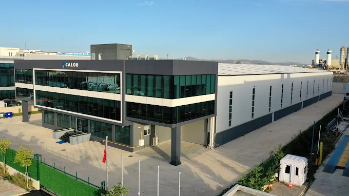
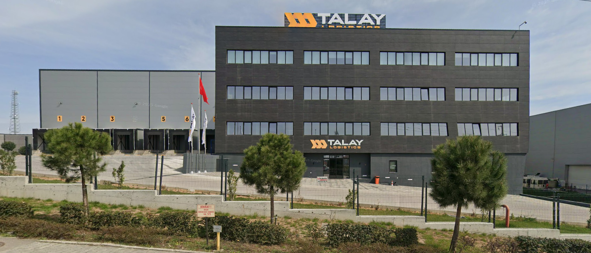
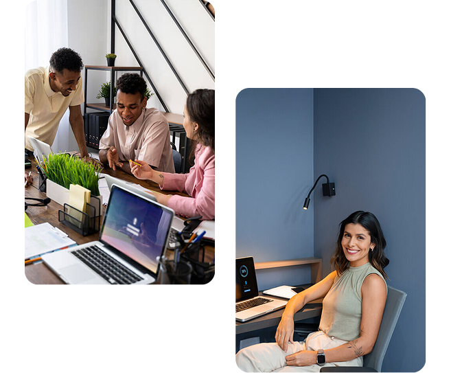

Ovasan Mühendislik; keşif, projelendirme, uygulama ve devreye alma adımlarında tek elden hizmet sunar; Calor Makine ve Talay Lojistik gibi sahalarda bu süreçleri uçtan uca yönetir.
İş güvenliği, mevzuata uygunluk ve kalite standartlarını merkeze alır; sahada etkin koordinasyon ve zamanında teslim anlayışıyla hareket ederiz, farklı sektörlerdeki kurumsal işlerde de aynı disiplini sürdürürüz.
Kurumsal firmalara ve bireysel projelere özel, ölçeklenebilir ve uzun ömürlü çözümler üretiriz.
Her projeye keşif ve analizle başlarız. İhtiyaçların netleşmesiyle birlikte teknik planlama ve uygulama adımlarını ayrıntılı şekilde kurgularız.
Bu yaklaşım, sahada hızlı ve sorunsuz ilerleme sağlar.


Kurulum sonrası bakım, kontrol ve teknik danışmanlık süreçlerinde işletmelerin yanında yer alırız.
Amacımız, projelerin sadece tamamlanması değil, uzun ömürlü ve verimli şekilde çalışmasıdır.